Expected environment setup
npm --prefix apps/web ci --ignore-scriptsObserved in .github/workflows/qa-audit.yml:L36
Native source materials / 76 indexed
This index links to repository-authored course records, examples, tutorials, and technical reading. The separate browser lab is an educational surrogate; its sliders and checkpoints do not execute this repository's native engine.
Current audited native source: 7304827ec70db520b5b910fa47175f80235f82ce

Browser-lab provenance from the reconciled package: package source revision 887ca4e2cc283692c86a885fac9ad760ca08d3e2. This is separate from the current native source revision above.

These exact one-line commands were observed in the audited repository workflow records and link to their source location. Expected setup, tool licensing, data, and environment vary by repository; the dashboard does not execute these commands or promise a completion time.
Expected environment setup
npm --prefix apps/web ci --ignore-scriptsObserved in .github/workflows/qa-audit.yml:L36
Source-defined validation command
python -m unittest discover -s tests -vObserved in .github/workflows/qa-audit.yml:L38
Source-defined example command
python -m datacenter_twin simulate --preset generator_failure --format markdown > /dev/nullObserved in .github/workflows/qa-audit.yml:L40
Expected environment setup
npm --prefix apps/web exec -- playwright install --with-deps chromiumObserved in .github/workflows/qa-audit.yml:L54
Source-defined validation command
npm --prefix apps/web run test:demoObserved in .github/workflows/qa-audit.yml:L58
Source-defined validation command
python scripts/audit_public_site.py --strict-seo --max-pages 250 --out outputs/audit/public-site.jsonObserved in .github/workflows/qa-audit.yml:L83
76 materials

Normal supply is the control case. No events occur; the utility supplies the requested 1,000 kW IT load through two 700 kW gross paths at 0.95 distribution efficiency.
docs/scenarios/normal.md
Path maintenance removes Path A from 300 s through 900 s. Utility supply remains available, but the surviving 700 kW gross Path B cannot deliver the full 1,000 kW IT request after distribution losses.
docs/scenarios/path_maintenance.md
Shared-domain failure removes the shared-controls dependency from both distribution paths between 300 s and 900 s. The utility remains available upstream, but neither path can reach the IT load.
docs/scenarios/shared_domain.md
What changes if the generator cannot start?
apps/web/src/course-lessons.ts
Start with a small JSON case and a question someone can answer by hand. A new scenario normally needs no new engine or plugin framework.
docs/engineering/adding-a-scenario.md
These are small, documentation-focused ideas that do not duplicate the current sensitivity/reporting work.
docs/scenarios/contribution-ideas.md
What changes when startup takes 60 seconds instead of 30?
apps/web/src/course-lessons.ts
Does 57 kWh bridge recovery at 500 seconds? Does 58 kWh?
apps/web/src/course-lessons.ts
Are two paths enough when either one must carry the whole load?
apps/web/src/course-lessons.ts
The right tool depends on the question you need to answer and the inputs you can defend.
docs/choosing-a-simulator.md
Project: datacenter-twin-lab. Account: 6aeaea77d967e029f75b0f66107c507b.
docs/cloudflare-pages-deployment.md
The requested PyPI distribution name is datacenter-twin; the Python import and
docs/engineering/pypi-publication.md
Start with the terms used in the 50 MW AI-cluster question, then work through the reference calculation.
docs/scenarios/glossary.md
What happens to two paths when their common main bus fails?
apps/web/src/course-lessons.ts
Open the interactive study ·
docs/studies/emt.md
Watch the captioned browser recording, download the WebM, or read the English captions.
docs/examples/proof-demo.md
A rack count is not a facility plan. Equipment requires service space, replacement routes, structural capacity and coordinated boundaries through every construction phase. Use the manuscript’s historical operating account to practise reporting what was actually stated without turning different area descriptions into one misleading density metric.
apps/web/src/infrastructure/content/22-facilities-phased-development.json
These measurements describe execution of the 0.4.0rc1 working build on one Windows machine on 23 September 2026. They are observations, not latency targets, physical controller speeds or a scalability claim. The raw files retain every sample and the environment. Ordinary background processes were not isolated.
docs/engineering/benchmark-method.md
Search Console listed 31 alternate simulator query URLs, one missing v1.0.0
docs/indexing-repair-2026-10-15.md
The Cloudflare Pages bundle includes _headers. It applies HSTS for one year
docs/engineering/static-security.md
Protection is not a green status field at one current. It is a chain from the actual fault through measurement, logic, DC supply and interruption. Use a declared inverse-time curve to learn how a calculation behaves, then inspect what that curve cannot establish about CT saturation, electrical zones or selectivity.
apps/web/src/infrastructure/content/18-protection-trip-chain.json
Lesson 3 | Prediction and exercise
docs/tutorials/battery-ride-through-worksheet.md

How much source power is needed to deliver 1,000 kW?
apps/web/src/course-lessons.ts
Does half the stored energy give half the ride-through duration?
apps/web/src/course-lessons.ts
This version estimates requested energy with an assumed-PUE multiplier. It does not model electrical supply, service delivery, or thermal transients.
docs/engineering/calculation-boundaries.md
Model: single\_load\_electrical\_continuity\_v1
docs/validation/examples/generator-failure-report.md
The schema-2 continuity model can evaluate one scenario field at a time with
docs/engineering/sensitivity.md
single_load_electrical_continuity_v1 is a reduced steady-state electrical flow model with discrete failures and a finite battery. It does not solve AC load flow, switching transients, protection coordination, harmonics, thermal behavior or workload queues. Its bounded topology is a synthetic experiment, not a certified redundant design.
docs/engineering/electrical-continuity.md
Can a shared control fault defeat both power paths?
apps/web/src/course-lessons.ts
Low resistance, low distortion and a nominal battery voltage each answer only a narrowly defined question. This lesson turns those single numbers into explicit boundaries. Follow the ground current, compare harmonic denominators, and include the return conductor in the trip circuit before drawing any conclusion about service.
apps/web/src/infrastructure/content/19-grounding-power-quality.json
How long can 5 MWh of stored energy bridge a 50 MW load?
apps/web/src/course-lessons.ts
The learning index is a static reading page with optional, small JavaScript enhancements. It does not load React, Python, NumPy, SciPy or a simulation worker. Following Run experiment opens the existing numerical application; its own explicit runtime controls govern scientific downloads.
docs/engineering/learn-discovery.md
How much energy does a constant load request in half an hour?
apps/web/src/course-lessons.ts
Open the study studio
docs/studies/power-dynamics.md
Read all 24 searchable lesson notes with worked answers, configuration tables and source links, even with JavaScript disabled.
docs/tutorials/power-systems-course.md
The time of a demand peak changes what a battery must supply. Three 30-minute schedules below each request 375 kWh, average 750 kW, and reach the same 1,000 kW peak. They share a 100 kWh battery and the same ten-minute loss of utility and generator supply. One is served throughout; the other two have different amounts of unserved energy.
docs/tutorials/demand-timing.md
Question: how do stored energy, generator startup and surviving paths change delivered IT power during an outage?
docs/scenarios/index.md
Two fibres are not automatically two independent services, and a low optical loss is not automatically an application pass. Separate the physical administration route from the logical fabric, then calculate a narrow loss budget and post-uplink-loss capacity. The lesson adds communications reasoning without pretending that the existing electrical simulator already models packets.
apps/web/src/infrastructure/content/21-network-optical-budget.json
How does assumed PUE change annual energy for the same 50 MW IT load?
apps/web/src/course-lessons.ts
The battery lesson already distinguishes reserve from ride-through. Now separate three further boundaries: AC output energy, delivered DC energy and nominal end-of-life storage. Then examine the protection DC circuit, where enough ampere-hours can coexist with insufficient voltage at the device that must operate.
apps/web/src/infrastructure/content/17-ups-battery-station-dc.json
Why does the 50 kWh case last longer when it can charge first?
apps/web/src/course-lessons.ts
battery-ride-through.ipynb is a deterministic first-run teaching example for the bundled generator_failure scenario. It derives the 100 kWh ride-through (307.8 s) and absolute depletion (607.8 s), then compares the charging-enabled and charging-disabled 50 kWh cases.
docs/examples/battery-ride-through.md
This reproduces lesson 3, “Calculate battery ride-through,” from the browser course. It starts with demo_scenario("generator_failure") and applies the lesson's exact recipe: id="course-ride-through", name="3. Calculate battery ride-through", append and deduplicate EDU-POWER-001, set charging to 0 kW, and set initial stored energy to either 100 kWh or 50 kWh. Construction goes through Sit…
docs/canonical-case.md
_A reproducible synthetic continuity laboratory for datacenter power systems._
README.md
Start with python -m datacenter_twin serve after installing the optional API dependencies. The released wheel includes the compiled dashboard; a source checkout requires building apps/web first. The CLI binds only to 127.0.0.1:8000; --port accepts 1–65535. The compiled React dashboard is served from the same process and origin. OpenAPI operation metadata is available at /openapi.json. Th…
docs/contracts/local-api.md
Start here: predict the ride-through of a synthetic 1,000 kW (1 MW) IT load with 100 kWh of stored battery energy, run the case, and explain its energy ledger.
docs/quickstart.md
Datacenter engineers can start with a short, reproducible continuity experiment: predict battery ride-through for a synthetic 1 MW IT load, run it, and explain the energy ledger. The browser defaults to 100 kWh stored energy; the 50 kWh challenge changes only the opening reserve.
docs/tutorials/index.md
Open the current 1 MW experiment or view a still frame.
docs/examples/demo-walkthrough.md
Generator failure tests finite stored energy. Utility and generator are both unavailable from 300 s to 900 s, so the battery is the only available source until it depletes.
docs/scenarios/generator_failure.md
Utility loss tests generator pickup. The utility is unavailable from 300 s through restoration at 900 s. The generator remains available and becomes ready after the declared 30 s start delay.
docs/scenarios/utility_loss.md
The original startup lessons ask whether a generator becomes available in time. This lesson asks a different question: can the available bank carry the backed load at all? Follow a source claim through its real-power conversion, post-loss capacity and fuel ledger. A failed arithmetic claim should stay failed even when the combined installed nameplates look impressive.
apps/web/src/infrastructure/content/16-generator-bank-fuel.json
The final lesson asks for a justified release decision, not the largest possible green score. Bring capacity, connectivity, protection, thermal behaviour, controls and evidence together. Then audit a proposed correction from the manuscript’s separate campus example: a remedy is another engineering assertion and must be recalculated.
apps/web/src/infrastructure/content/24-integrated-design-release.json
Start with the 1 MW guided experiment, open the 50 MW generator-failure preset in the advanced workspace, or follow the twelve continuity lessons. The first result uses the local JavaScript continuity engine. Verify against Python explicitly loads the reference Python engine when you want a second calculation.
docs/engineering/browser-demo.md
datacenter_twin.reporting.render_markdown(result) and
docs/contracts/reports.md
The browser course needs static HTTPS hosting only. Calculation, scenario editing and optional Python verification run on the visitor's device. A domain change does not require a simulation server, database or additional runtime service.
docs/engineering/custom-domain.md
Authoritative validation: datacenter_twin/topology.py. Authoritative output: SimulationRun in datacenter_twin/continuity.py. The complete runnable input is reference-site-v2.json; obtain a preset through GET /api/v1/demo?preset=generator_failure. Every field is required, unknown fields are rejected, and JSON object keys must be unique.
docs/contracts/electrical-v2.md
The start view can show the verified 15-second engineering film above the existing guided experiment. apps/web/src/EngineeringHero.tsx registers the small vanilla <khan-grid-hero> adapter only after the enabled start view mounts. It requests the host stylesheet and the adapter module at that point; the video itself is created only after the visitor presses Play animation. The wrapper kee…
docs/ENGINEERING-HERO.md
The builder creates two exact course variants and the existing path-maintenance preset. Course cases are reconstructed from the public course recipe rather than by changing a finished run. Their scenario JSON is passed through SiteScenario.from_dict, then to simulate_continuity. Each scenario has a stable input_sha256; filenames for its scenario, run, and reports include that digest.
docs/validation/evidence-method.md
This protocol is for a bounded review of software behavior and reproducibility. It is not a facility acceptance test, protection study, equipment validation, certification exercise, uptime claim, cooling/workload study, or physical-control procedure.
docs/validation/review-protocol.md
This is a blank worksheet. It records no completed review, reviewer, affiliation, endorsement, or result. Complete it only after the reviewer has performed the work and has chosen what identity information to disclose.
docs/validation/reviewer-receipt-template.md
Infrastructure Engineering results use the separate infrastructure-screen-1 schema. They do not use, translate to, or inherit verification badges from planning schema 1 or electrical schema 2. The typed model version is 1.0.0; lesson content supplies its own content version and source metadata.
docs/validation/infrastructure-serialization.md
This capsule records executable maintainer evidence for the public synthetic
docs/validation/reproducibility-capsule.md
The dashboard's advanced comparison varies one field from the completed schema-v2 run and runs each candidate against the existing deterministic electrical engine. The result table reports requested, served and unserved IT energy (kWh), interruption time (s), and the first battery-depletion event. It also shows the source run ID and source input SHA-256; downloadable JSON retains each ca…
docs/engineering/scenario-comparison.md
The executable validator is datacenter_twin/contracts.py. Unknown and duplicate fields are rejected. A scenario has exactly these fields:
docs/contracts/scenario-v1.md
The static course has thirty indexable pages: the working simulator, a course index, twelve original continuity notes, twelve Infrastructure Engineering notes, an author page, a reference-results page, and standalone EMT and power-dynamics study notes. Every lesson is readable without JavaScript and links to its live experiment, starting/challenge configuration, worked answer and exact s…
docs/engineering/search-discovery.md
Two continuity results answer the first engineering questions:
docs/tutorials/continuity-walkthrough.md
The existing lessons show how a surviving path or shared controller can govern electrical service. Now extend that intuition into a state matrix. Installed equipment, connected equipment and independently substitutable equipment are different sets. A spare counts only when it can reach the required load in the state being assessed.
apps/web/src/infrastructure/content/14-resilience-state-matrix.json

Question: when a synthetic 50 MW aggregate IT load loses utility and generator supply, how long does a 5 MWh battery reserve support the IT boundary?
docs/scenarios/ai-cluster-50mw.md
Begin where the original course leaves off: not with a bigger battery, but with a more disciplined definition of demand. A facility total is meaningful only when every term belongs to the same boundary and operating condition. In this lesson, a 20 MW IT allocation becomes a traceable facility ledger, while a second example demonstrates why conflicting source values must remain visible.
apps/web/src/infrastructure/content/13-evidence-load-ledger.json
A completed component test answers a component question. Integrated continuity requires an initial state, expected sequence, instruments, acceptance criteria, stop conditions and recovery boundary that span the service chain. Compare two clocks, then examine the measurement boundary behind an apparently precise efficiency number.
apps/web/src/infrastructure/content/23-commissioning-evidence-loop.json
Battery minutes do not create cooling minutes. Start with the manuscript’s mixed-cooling rack, then move to a separately labelled facility thermal model. The visual goal is to make both heat paths and their shared rejection boundary visible, so that the learner never mistakes a liquid-cooled label for complete removal of room heat.
apps/web/src/infrastructure/content/20-thermal-liquid-continuity.json
A current value without its voltage, power base and network boundary is easy to misuse. This lesson builds a small equivalent circuit in layers, then shows how changing an assumption changes a fault-current screen. The purpose is to expose model limits before equipment selection, not to turn an attractive fault animation into a completed short-circuit study.
apps/web/src/infrastructure/content/15-transformer-fault-boundaries.json
The browser course contains twelve interactive lessons for datacenter engineers learning power continuity. No installation or account is needed. Open the atlas for all four chapters, or follow Next lesson.
docs/engineering/course-studio.md
Choose a facility, stress its supply, and trace what reaches the IT load. The energy workspace combines an interactive isometric campus, interval power flows, editable equipment limits, a complete event replay and reproducible reports.
docs/engineering/energy-scenario-workspace.md
Version 2.0.0 — Infrastructure Engineering extends the local teaching and research application to 24 lessons. It retains the canonical 1 MW guide, eighteen presets, four facility profiles, scenario import, demand-timeline editing, sensitivity tools, reports, printable legacy worksheets, EMT and five power-dynamics studies. Twelve infrastructure lessons add bounded educational screens, se…
docs/engineering/release-readiness.md
The 2.0.0 continuity engine remains a synthetic teaching model for one aggregate IT load. It covers utility/generator availability, finite battery energy, conversion losses, distribution-path limits, deterministic restoration, and interval energy accounting. It is not calibrated to a facility and does not model cooling transients, workload service, protection coordination, safety certifi…
docs/evidence.md